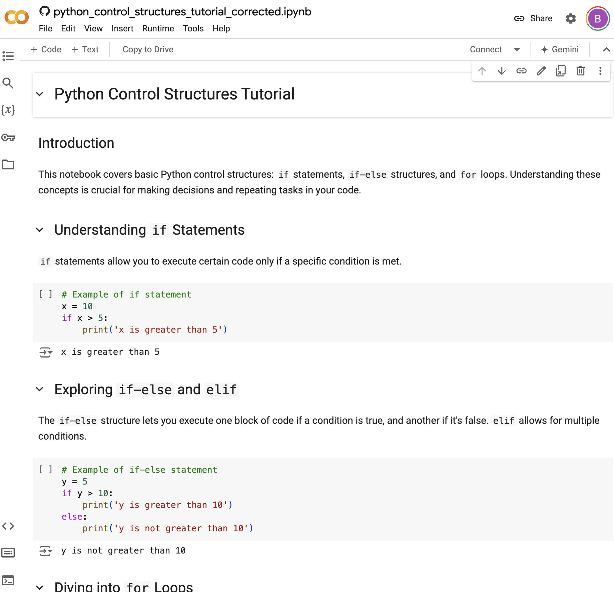

Python Programming: Control Structures Tutorial
How to Open the Coding Environment
Open: Click here to open Google Colab
Introduction to Python Control Structures
In this tutorial, we will delve into Python's control structures, focusing on if statements, if-else structures, and for loops. These are fundamental to creating conditional logic and repetitions in your code, allowing for more complex and dynamic programs.
Understanding if Statements
if statements in Python allow you to execute a block of code only if a specified condition is true.
if condition:
# code to execute if condition is trueExploring if-else and elif
The if-else structure lets you execute one block of code if a condition is true, and another block if the condition is false. elif (else if) is used to check multiple conditions.
if condition:
# code if condition is true
else:
# code if condition is falseDiving into for Loops
A for loop in Python is used to iterate over a sequence (like a list, tuple, dictionary, or string), executing a block of code with each iteration.
for item in sequence:
# code to executePractical Example: Combining if Statements with for Loops
Combining if statements with for loops allows for conditional execution of code within a loop. This is useful for filtering items, accumulating values conditionally, and more.
for item in sequence:
if condition:
# code to execute if condition is metConclusion
This tutorial covered the basics of using if statements, if-else and elif structures, and for loops in Python. These control structures are the building blocks for creating complex logic in your programs.
Happy coding!